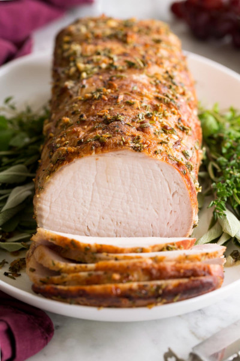
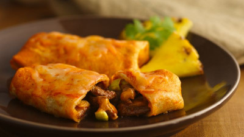
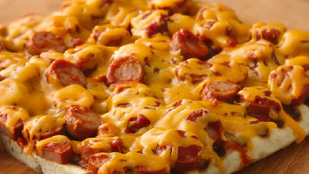
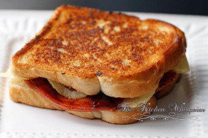
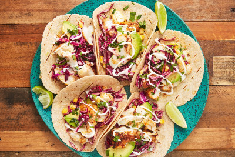

Welcome to Hean Meat
Recipe of the Week
Roasted Pork Tenderloin
Pork tenderloin, also called pork fillet, pork steak or Gentleman's Cut, is a long thin cut of pork. As with all quadrupeds, the tenderloin refers to the psoas major muscle along the central spine portion, ventral to the lumbar vertebrae. Fusce nec nunc non sapien aliquam volutpat. Etiam congue id leo vel luctus. Donec eleifend dolor lacus, nec blandit dolor facilisis ut. Vivamus vestibulum at purus vitae efficitur. Mauris ac dolor auctor dolor hendrerit cursus mattis ut libero. Suspendisse vel est eget tortor dignissim fermentum. Suspendisse at faucibus nulla, et hendrerit diam. Curabitur nec cursus ipsum.
Ingredients
- 2 lbs. HAEN PORK TENDERLOIN cut in 1/2" slices
- 2 T. olive oil
- 1 T. butter
- 1/4 lb. ham and/or bacon
- 1/2 tsp. sage
- 1 small onion, chopped
- 4 T. sundried tomatoes, chopped
- 1/2 cup chicken broth
- 1/2 cup half & half
- shittake mushrooms
- salt and pepper
Methods/steps
- Precook bacon if desired.
- Heat oil and butter in a medium saucepan.
- Add ham and/or bacon, sage, tomato, onion, garlic, and mushrooms if desired.
- Saute over medium heat about 5 minutes.
- Add pork; saute about 10 minutes or until pork is lightly browned.
- Add broth and half and half.
- Heat to boiling; reduce heat and simmer about 20 minutes; sauce will thicken.
- Salt and pepper to taste.
Baked Burritos
One of the main differences between enchiladas and burritos is that the enchilada is usually made with corn tortillas and the burrito is made with flour. The second difference between the two is that you eat enchiladas with a fork. They are covered in (smothered with) sauce. Burritos can be hand held food. Nam dignissim sapien eget metus euismod vulputate. Pellentesque at libero a ligula tristique gravida. Quisque vitae leo faucibus nisi aliquet aliquet. Maecenas imperdiet nibh tortor, eu pharetra nulla commodo at. Mauris finibus velit vitae pretium sollicitudin. Quisque dapibus sem ut dolor pretium, sed maximus eros laoreet. Aenean in quam enim.
Ingredients
- 1 1/2 lbs. HAEN LEAN GROUND BEEF
- 1 (15oz.) refried beans
- 1 (16oz.) can tomato sauce
- 3 T. chili powder
- 1/4 tsp. garlic salt
- 1/4 tsp. cumin
- 1/4 tsp. pepper
- 1 large onion, diced
- 1 1/2 lbs. shredded cheddar cheese
- 1 pkg. (8) 10 inch flour tortillas
- shredded lettuce
- sour cream, taco sauce, black olives as preferred
Methods/steps
- Precook bacon if desired.
- Heat oil and butter in a medium saucepan.
- Add ham and/or bacon, sage, tomato, onion, garlic, and mushrooms if desired.
- Saute over medium heat about 5 minutes.
- Add pork; saute about 10 minutes or until pork is lightly browned.
- Add broth and half and half.
- Heat to boiling; reduce heat and simmer about 20 minutes; sauce will thicken.
- Salt and pepper to taste.
Chili Dog Pizza
Your kids will flip for these Healthy Chili-Cheese Dogs! Uncured hot dogs cost a few dollars more than regular ones, but they're worth it. They are lower in fat and sodium and free of nitrites. Finibus turpis ac scelerisque congue. Praesent at fringilla leo. Pellentesque fermentum libero non neque rhoncus sodales. Phasellus dapibus sagittis porttitor. Aliquam et magna iaculis, vulputate ipsum sed, faucibus leo. Donec quis ligula ut tortor dapibus tincidunt vitae at ligula. Etiam a luctus nisi. Vivamus tempus nec diam nec lobortis. Praesent bibendum aliquet sagittis. Curabitur hendrerit justo arcu.
Ingredients
- 1 pkg. HAEN SKINLESS WIENERS cut into 1/2 inch slices
- 1 can (10 oz.) refrigerated pizza crust
- 1 can (7.5 oz.) chili with beans (or use HAEN’S CHILI!)
- 1/4 cup drained sweet pickle relish
- 1 cup chopped Italian plum tomatoes
- 1 cup shredded Mozzarella cheese
Methods/steps
- Heat oven to 425°.
- Grease 12 inch pizza pan.
- Unroll dough; place on pan and press dough out to edge of pan, forming 1/2" rim.
- Bake 7-9 minutes until light golden brown.
- Remove partially baked crust; spoon chili over crust.
- Top chili with hot dogs, relish, tomatoes and cheese.
- Bake 15-18 minutes or until crust is a deep golden brown.
Hot Bologna Sandwich
The bologna sandwich is a sandwich common in the United States and Canada. Also spelled baloney sandwich, it is traditionally made from sliced bologna between slices of white bread, along with various condiments, such as mayonnaise, mustard, and ketchup. Duis nisl nunc, suscipit non neque quis, lobortis fermentum leo. Cras eget mauris urna. Nunc feugiat nisl id finibus fermentum. Donec convallis risus nec sapien luctus, at sagittis eros fermentum. Ut eu viverra urna. Nam sed magna libero. Nullam placerat, libero sit amet feugiat sollicitudin, nunc nulla bibendum sapien, at malesuada mauris nisi quis leo. Proin vitae laoreet nisl, rhoncus tincidunt libero. Aenean ac tincidunt elit. Integer quam lectus, consequat sit amet rhoncus sed, porta ac mi. Integer lacinia molestie neque, eget viverra augue condimentum et. Proin scelerisque nisi in rhoncus mattis. In hac habitasse platea dictumst. Donec turpis mi, venenatis eget eros quis, sodales vestibulum turpis. Quisque vulputate dui vitae odio pretium dignissim. Donec et vehicula ipsum.
Ingredients
- 1 stick HAEN BOLOGNA, diced
- 1 pkg. HAEN POTATO ROLLS
- 3 T. mayonnaise
- 1/2 cup chili sauce
- 1/2 cup velveeta cheese cubed
- 1/3 cup onions chopped
- 1/2 cup green olives chopped
Methods/steps
- Preheat oven to 400 degrees F.
- In a small bowl, blend the mayo and chili sauce.
- Add the bologna, cheese, onions, and olives
- Cut rolls in half and spread bologna mixture evenly on all rolls.
- Wrap each roll in aluminum foil and bake for 10 minutes.
Fish Tacos
There are three important components to making great fish tacos: white fish, shredded cabbage, and crema (a white sauce). Other parts of this recipe are adaptable, but those three things, paired together, are the trinity of basic fish tacos. Praesent tempus enim vitae sem porta bibendum. In in dictum libero, vel sodales tortor. Proin nulla velit, porttitor vel ex sed, efficitur pulvinar velit. Aliquam bibendum malesuada odio sit amet congue. Class aptent taciti sociosqu ad litora torquent per conubia nostra, per inceptos himenaeos. Phasellus tempor, ante at porttitor malesuada, risus leo ultrices urna, vitae vehicula sapien nibh eget lectus. Ut et eros odio. Nam id finibus neque, at volutpat augue. Curabitur cursus mi porttitor congue sagittis. Pellentesque dapibus scelerisque eros, sed pretium dui dapibus ac. In hac habitasse platea dictumst. Proin auctor imperdiet tincidunt. Phasellus auctor magna nec malesuada consequat. Mauris feugiat rhoncus nunc. Suspendisse massa nisi, luctus vel nunc mollis, rutrum pellentesque risus.
Ingredients
- 1 lb. HAEN ICELANDIC HADDOCK FILLETS
- 1 quart oil for frying
- 1 pkg. (12 oz.) corn tortillas
- 1 head cabbage finely shredded
Methods/steps
- To make batter: In a large bowl, combine flour, cornstarch, baking powder, and salt. Blend egg and beer, then quickly stir into the flour mixture (a few lumps are ok).
- To make white sauce: In a medium bowl, mix together yogurt and mayonnaise. Gradually stir in fresh lime juice until consistency is slightly runny. Season with jalapeno, oregano, cumin, dill and cayenne.
- Heat oil in deep fryer to 375 degrees F
- Dust fish lightly with flour. Dip into beer batter and fry until crisp and golden brown; drain on paper towels.
- Lightly fry tortillas.
- To serve; place fried fish in a tortilla and top with cabbage and white sauce.